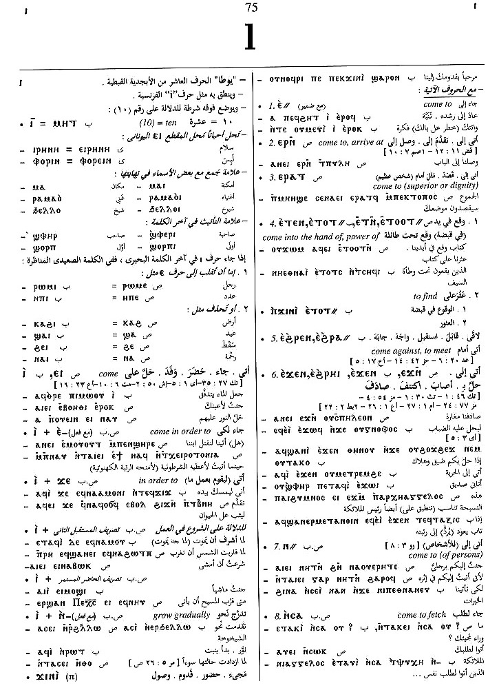
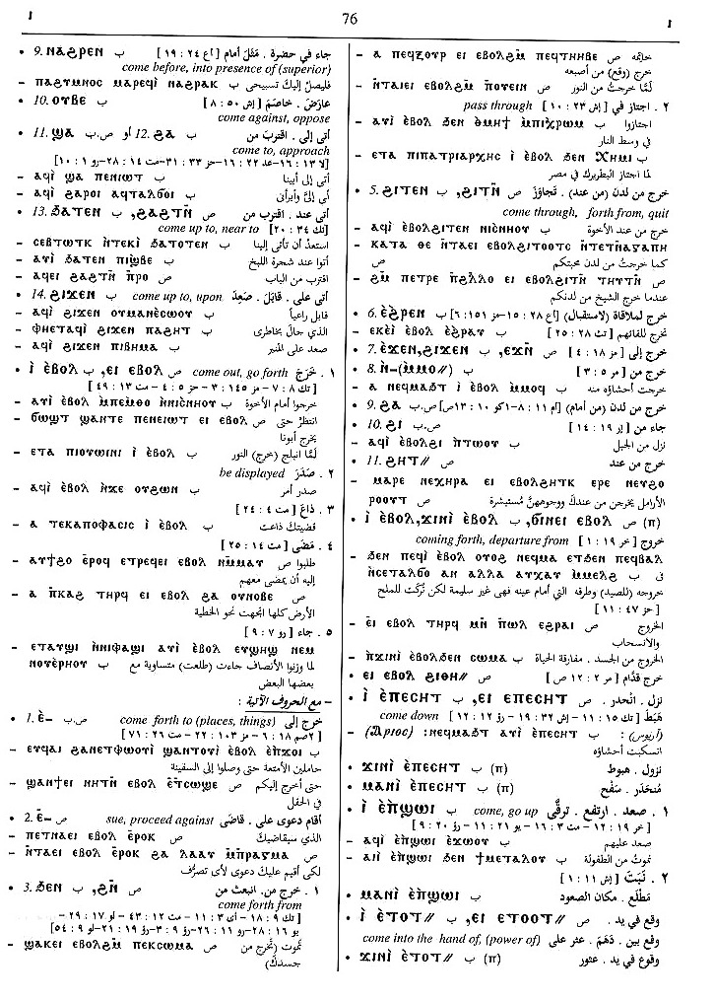
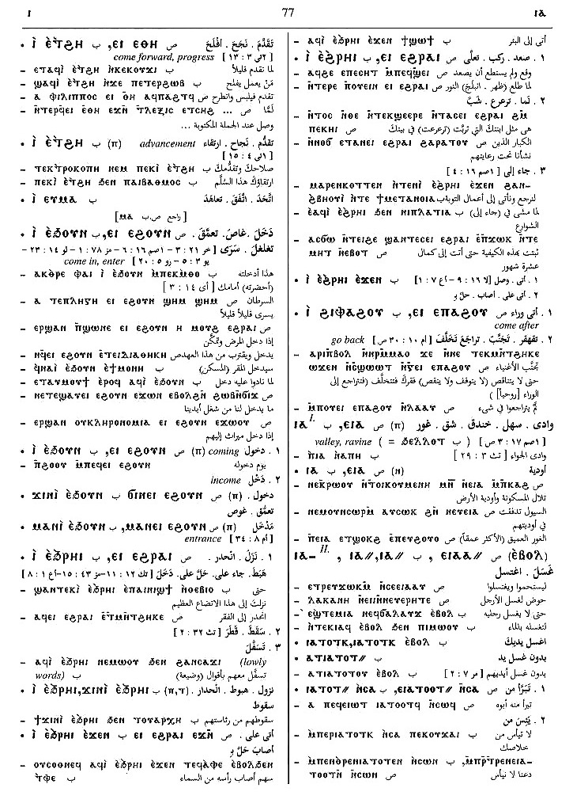

(verb)
intr: come, go [ερχεσθαι, ηκειν]
as auxil. or subsidiary, be about to
as auxil. or subsidiary, be about to
(S, A, sA, F)
ⲉⲓ
(sA, B, F) ⲓ
(S) imperative: ⲁⲙⲟⲩ
(sA, B, F) ⲓ
(S) imperative: ⲁⲙⲟⲩ
| (S) ⲉⲓ (noun) | (noun)
coming, advent307 |
Crum: 70b | |||||||
| With following preposition:4145 | |||||||||
| (S, A, sA, B, F) ⲉⲓ ⲉ- | come to, seldom of persons4146 | ||||||||
| (S) ― ⲉⲣⲛ- | come to, arrive at4147 | ||||||||
| (S) ― ⲉⲣⲁⲧ- | come to superior or dignitary4148 | ||||||||
| (S, B, F) ― ⲉⲧⲛ-, ― ⲉⲧⲟⲟⲧ= | come into the hand of, power of [εμπιπτειν εισ]4149 | ||||||||
| (S, B) ― ⲉϩⲣⲉⲛ- | come against, to meet4150 | ||||||||
| (S, A, B, F) ― ⲉϫⲛ- | come upon, arrive at, be applicable to4151 | ||||||||
| (S, B) ― ⲛ- | come to, of persons4152 | Crum: 71a | |||||||
| (S, B, F) ― ⲛⲥⲁ- | come after, to fetch4153 | ||||||||
| (S, B) ― ⲛⲁϩⲣⲉⲛ-, ― ⲛⲛⲁϩⲣⲉⲛ- | come before, into presence of superior4154 | ||||||||
| (B) ⲓ ⲟⲩⲃⲉ- | come against, oppose [ανθισταναι]4155 | ||||||||
| (S, sA, B, F) ― ϣⲁ- | come to, approach, mostly persons4156 | ||||||||
| (B) ⲓ ϩⲁ- | come to, approach, mostly persons4157 | ||||||||
| (B) ― ϩⲁⲧⲛ-, ― ϩⲁϩⲧⲛ-, ― ϧⲁⲧⲉⲛ- | come up to, near to4158 | ||||||||
| (B) ― ϩⲓϫⲉⲛ- | come up to, upon4159 | ||||||||
| With following adverb:4160 | |||||||||
| (S, A, B, F) ― ⲉⲃⲟⲗ | come, go forth, be displayed
merely come, go4161 |
||||||||
| (S, A, B, F) ― ⲉⲃⲟⲗ ⲉ- | come forth to places,
things
merely come to sue, proceed against (in S,F legal texts)4162 |
Crum: 71b | |||||||
| (S, A, B, F) ― ⲉⲃⲟⲗ ϩⲛ-, ― ⲉⲃⲟⲗ ϧⲉⲛ- | come forth from4163 | ||||||||
| (S, B) ― ⲉⲃⲟⲗ ϩⲓⲧⲛ- | come through, forth from, quit
sometimes ⲉⲃ. ϧⲉⲛ- like ⲉⲃ. ϩⲓⲧⲛ-, pass through4164 |
||||||||
| ⲉⲓ ⲉⲃⲟⲗ with various preps5493 | |||||||||
| (B) ⲉϩⲣⲉⲛ- (c) | 5494 | ||||||||
| (S, B) ⲉϫⲛ- (c) | 5495 | ||||||||
| (S, B) ϩⲁ- (c) | 5496 | Crum: 72a | |||||||
| (S, B) ϩⲓ- (c) | 5497 | ||||||||
| (S) ϩⲏⲧ= (c) | [εισ συναντησιν, προφθανειν]5498 | ||||||||
| (S) ϩⲓⲑⲏ (c) | 5499 | ||||||||
| (S)
ⲉⲓ ⲉⲃⲟⲗ (ⲡ)
(S) ϭⲓⲛⲉⲓ ⲉⲃⲟⲗ (ⲧ) (B) ϫⲓⲛⲓ ⲉⲃⲟⲗ (ⲡ) |
(noun male)
coming forth, departure from [εξοδοσ, διεκβολη]4165 |
||||||||
| (S, A, B, F) ― ⲉⲡⲉⲥⲏⲧ | come down
nn m, descent4166 |
||||||||
| (B) ― ⲉⲡϣⲱⲓ | come, go up4167 | ||||||||
| (S)
― ⲉⲡⲁϩⲟⲩ,
― ⲛⲥⲁⲡⲁϩⲟⲩ
(B) ― ϩⲓⲫⲁϩⲟⲩ |
come after, go back4168 | ||||||||
| (S, B) ― ⲉⲑⲏ, ― ⲉⲧϩⲏ | come forward, progress
[προκοπτειν]
nn m, advancement [προκοπη]4169 |
||||||||
| (S, A, B, F) ― ⲉϩⲟⲩⲛ, ― ⲉϧⲟⲩⲛ | come in, enter
nn m, coming in, entry4170 |
||||||||
| ⲙⲁ ⲛⲉⲓ ⲉϩ. | 5500 | Crum: 72b | |||||||
| ϭⲓⲛⲉⲓ ⲉϩ. | 5501 | ||||||||
| (S, A, B, F) ― ⲉϩⲣⲁⲓ | come up
grow up often merely come4171 |
||||||||
| (S, B, F) ⲉⲓ ⲉϩⲣⲁⲓ. ⲉϫⲛ- | (where ⲉϩ. strengthens ⲉϫⲛ-), come upon, up upon, reach4172 | ||||||||
| (S, A, B, F) ― ⲉϩⲣⲁⲓ, ― ⲉϧⲣⲁⲓ | come down, descend
nn S,B, coming down, descent [καταβασισ]4173 |
Crum: 73a | |||||||
| (S, B) ⲉⲓ ⲉϩⲣⲁⲓ. ⲉϫⲛ- | come (down) upon, befall4174 | ||||||||
See also:
Crum: 70,71,72,73

70

71

72

73
Dawoud: 75a-77b

75

76

77